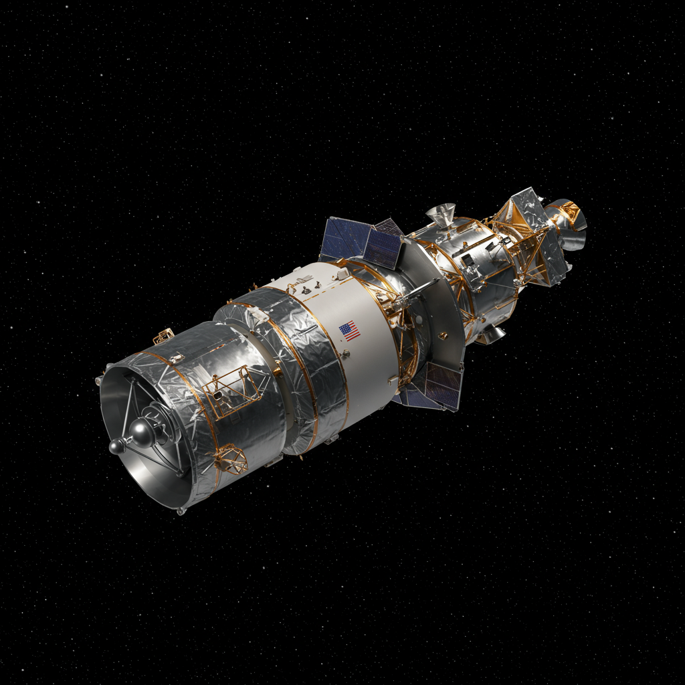

Chandra X-Ray Observatory
Agencia: NASA
Fecha de lanzamiento: 23 de julio de 1999
Duración de misión: Más de 20 años en servicio
Tipo de misión: Observatorio espacial de rayos X
Objetivo: Estudiar fuentes de rayos X en el universo, como agujeros negros, estrellas de neutrones, supernovas y cúmulos de galaxias
Carga científica: Espejos de precisión, cámaras CCD avanzadas, espectrómetros de alta resolución
Significado del nombre
“Chandra” significa “Luna” en sánscrito. El nombre fue elegido en honor al astrofísico Subrahmanyan Chandrasekhar (1910–1995), ganador del Premio Nobel en 1983. Chandrasekhar fue célebre por descubrir el límite que lleva su nombre (aprox. 1.4 masas solares), que define cuándo una estrella enana blanca colapsa en una estrella de neutrones o agujero negro.
El observatorio fue nombrado así para homenajear su legado en la física estelar y su trabajo pionero sobre la evolución de las estrellas, ya que Chandra estudia precisamente esos objetos extremos en rayos X.
Impacto histórico
Chandra ha revolucionado nuestra comprensión del universo de alta energía. Ha observado con gran detalle remanentes de supernovas, ha confirmado la existencia de agujeros negros supermasivos en centros galácticos y ha permitido medir la materia oscura en cúmulos de galaxias. Sus imágenes complementan observaciones ópticas e infrarrojas, ofreciendo una visión completa de fenómenos extremos.
Estado actual
Chandra sigue operativo y en servicio activo. A pesar de que su vida útil original era de 5 años, ha superado dos décadas de funcionamiento estable gracias a su diseño robusto y una planificación eficiente de sus observaciones.